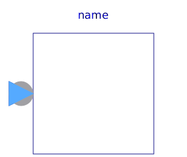
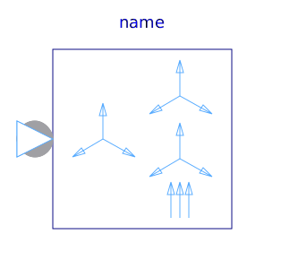
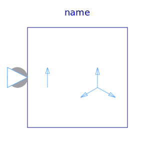
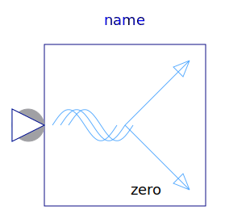
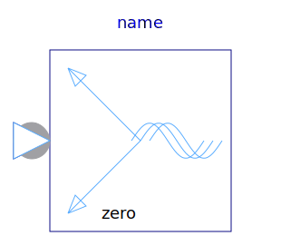

Blocks for quasi stationary multi phase systems
| Name | Description |
|---|---|
|  QuasiRMS | |
|  SymmetricalComponents | Creates symmetrical components from signals representing quasi static phasors |
|  SingleToMultiPhase | Extends complex phase signal to complex multi phase signals using symmetricOrientation |
|  ToSpacePhasor | Conversion: m phase -> space phasor |
|  FromSpacePhasor | Conversion: space phasor -> m phase |